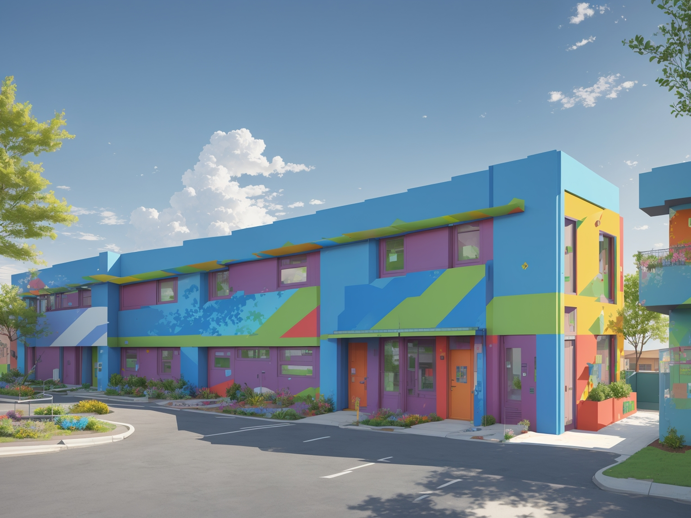
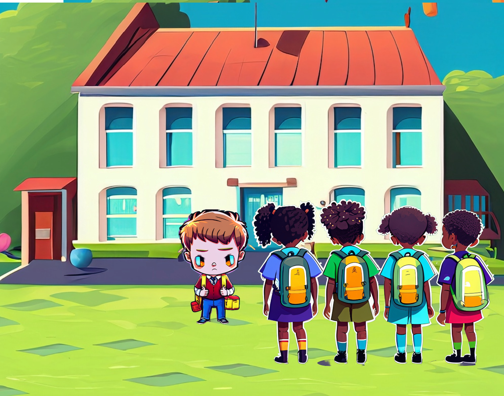
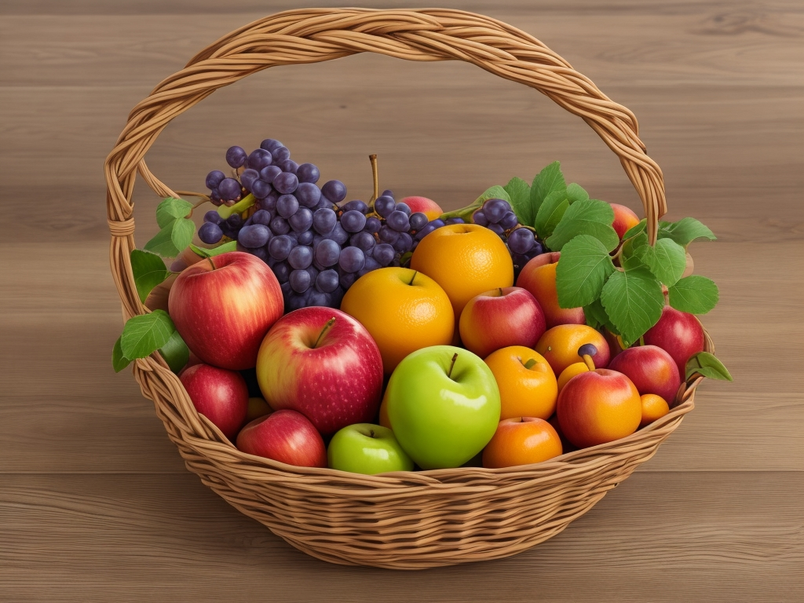
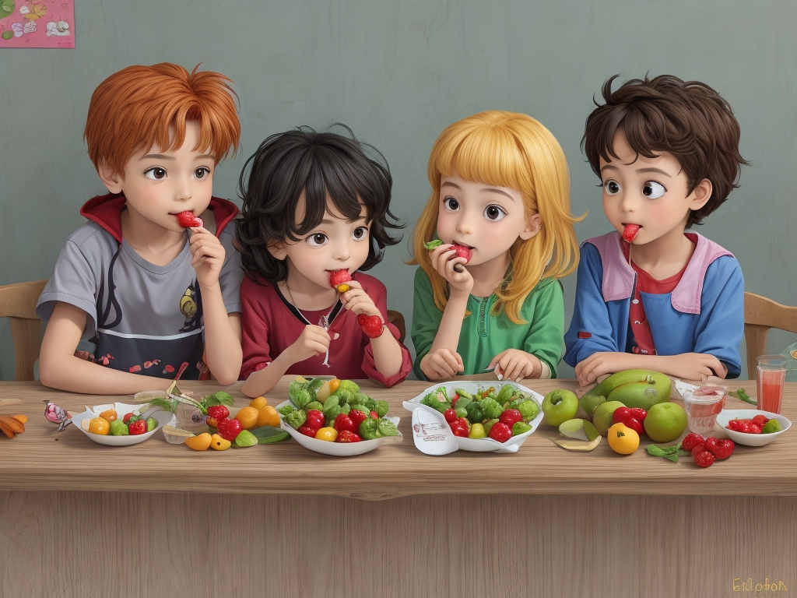

Once upon a time, in a cozy little primary school nestled between green hills and chirping birds, there was a class full of energetic children. Among them was Timmy, a bright-eyed boy who loved to laugh and play with his friends.


One sunny morning, as the bell rang, Timmy's friends noticed something was amiss. Timmy wasn't there! They looked around the classroom, puzzled and worried. "Where's Timmy?" they whispered to each other.
Days passed, and still, Timmy didn't show up. His friends missed his cheerful laughter and his friendly high-fives. They couldn't concentrate on their lessons, wondering where he could be.

Finally, after three long days, Timmy returned to school. His friends surrounded him, bombarding him with questions. "Where were you, Timmy? We missed you!"
Timmy looked a little pale as he explained, "I was sick. My stomach hurt a lot, so I had to stay home."

His friends' faces fell. They didn't like hearing that Timmy had been unwell. "But why were you sick?" they asked with concern.
Timmy shrugged sadly. "I think it's because I ate too many snacks that weren't good for me."
Their teacher, Mrs. Parker, overheard their conversation.
Mrs. Parker gathered the children around her with a warm smile. "Class, let me share something important with you," she said gently.
"You see, our bodies are like strong castles, guarded by brave soldiers called organs. But sometimes, sneaky invaders try to sneak into our castles and cause trouble. These invaders are the chemicals found in many commercial snacks—like artificial colorings, preservatives, and other additives."
The children listened intently, their eyes wide with curiosity.
"These chemicals can make our organs feel weak and tired," Mrs. Parker continued. "They can even make us sick! “
As Mrs. Parker explained the importance of choosing healthy snacks, a murmur of uncertainty spread among the children. "But what will we eat during break time if the commercial snacks are bad?" one child piped up, voicing the concern that lingered in many minds.

Mrs. Parker smiled understandingly, her eyes gleaming with warmth. "I understand your worry, my dear students. But fear not, for nature has provided us with a delightful array of snacks that are not only delicious but also incredibly good for us."
She reached into her bag and pulled out a colorful assortment of fruits—apples, bananas, grapes, and oranges. "Behold," she exclaimed, holding them up like precious treasures. "These are the champions of our snack time! They may not come in flashy packaging or bright colors, but their goodness shines from within."
Some of the children wrinkled their noses skeptically. "But they don't look as tasty as the snacks we usually have," one of them remarked.
Mrs. Parker chuckled softly, her eyes twinkling with mischief. "Ah, but appearances can be deceiving, my young friends! Let me show you the magic within."
With a swift motion, she peeled an orange and offered slices to the children. "Close your eyes and take a bite," she encouraged.
Reluctantly, the children followed her instructions. As the juicy sweetness of the orange burst onto their taste buds, their faces lit up with surprise and delight. "Wow, it's so good!" one exclaimed, eyes wide with wonder.
Mrs. Parker grinned triumphantly. "See? Fruits may not have fancy wrappers, but they are packed with natural goodness and flavors that will make your taste buds dance with joy."
Fruits are like superheroes for our bodies! They're not only sweet and delicious, but they're also packed with tiny soldiers that fight off invaders and give our organs energy."
The children gasped in amazement.
"Imagine each bite of fruit as a shield protecting your castle," Mrs. Parker said, her eyes twinkling with excitement. "When we eat fruits, we're giving our organs the strength they need to stay healthy and strong. They help our bodies work better, keeping us safe from germs and viruses."

Slowly but surely, the children's hesitations melted away as they sampled the various fruits Mrs. Parker had brought. With each bite, they discovered a new favorite, marveling at the vibrant colors and delicious tastes nature had to offer.
"From now on, let's make fruits our go-to snacks," Mrs. Parker declared, her voice filled with conviction. "Not only will they keep us healthy and strong, but they will also bring a burst of joy to our break times."
And with that, the children nodded in agreement, their hearts filled with newfound excitement for their fruity adventures ahead.
You finished the story.
It's time for a Quiz !